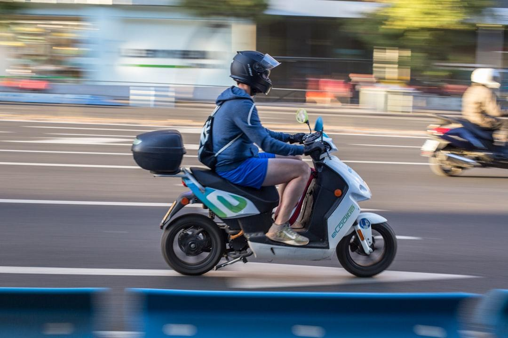

Primero fuimos motoqueros
MotoReclamo no surgió desde un escritorio de oficina. Nació en la calle, arriba de dos ruedas, viviendo de primera mano lo que pasa cuando un auto te cruza y la aseguradora te da la espalda.
El vacío que sufría la comunidad en dos ruedas
Durante años vimos el mismo patrón repetirse: un motociclista sufre un choque, queda con el cuerpo golpeado, la moto inutilizada y la incertidumbre de no saber a quién recurrir.
Los estudios jurídicos tradicionales suelen tratar a las motos como un vehículo más, sin dimensionar la gravedad oculta de las lesiones traumatológicas, el costo altísimo de la indumentaria técnica destruida o los prejuicios habituales de las aseguradoras, que intentan culpar sistemáticamente al que anda en moto.
Por eso creamos MotoReclamo: una plataforma especializada en acompañar, orientar y defender a quienes andan en dos ruedas.

Conocemos el asfalto porque transitamos los mismos caminos.
¿Por qué los siniestros en moto son distintos?
El cuerpo es el paragolpes
A diferencia de un choque entre automóviles, en la moto no hay chasis que absorba el impacto. Incluso una caída leve puede dejar secuelas articulares, ligamentarias o cicatrices permanentes que deben ser peritadas médicamente.
Indumentaria de protección
Un casco homologado, una campera con protecciones, guantes y botas técnicas salvan vidas pero se destruyen en el asfalto. Las aseguradoras suelen "olvidarse" de incluirlos si no se exige formalmente su reposición.
Estigmatización habitual
Los liquidadores de siniestros intentan atribuir culpas concurrentes con frases como "iba rápido" o "hizo zigzag". Nuestro conocimiento técnico de la física de la moto y de la dinámica vial neutraliza esos argumentos infundados.
Nuestra Articulación con Profesionales Matriculados
Para garantizar el máximo estándar ético y legal, en MotoReclamo mantenemos una clara diferenciación de roles:
- ▪ MotoReclamo: Canal de orientación especializada, recepción de consultas, contención inicial y análisis de viabilidad preliminar.
- ▪ Profesionales del derecho: Abogados matriculados e independientes en cada jurisdicción del país, encargados de la negociación formal, pericias y patrocinio letrado cuando corresponde.
- ▪ Sin promesas falsas de resultado: Cada caso es único y su resolución depende de las pruebas y leyes aplicables. Nuestro compromiso es brindarte transparencia absoluta y luchar por lo que legítimamente te corresponde.
Hablemos de tu situación
Si tuviste un accidente o tenés dudas sobre un siniestro ocurrido en cualquier punto del país, estamos a tu disposición.